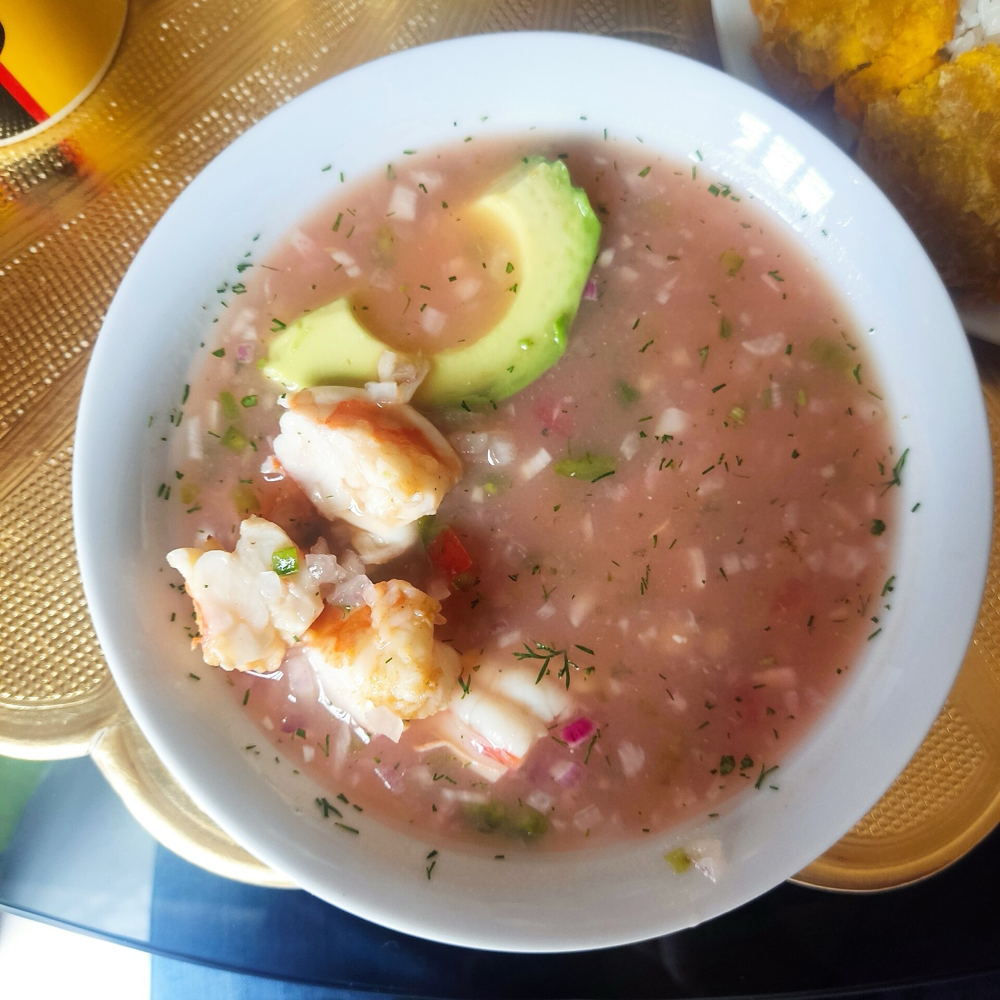
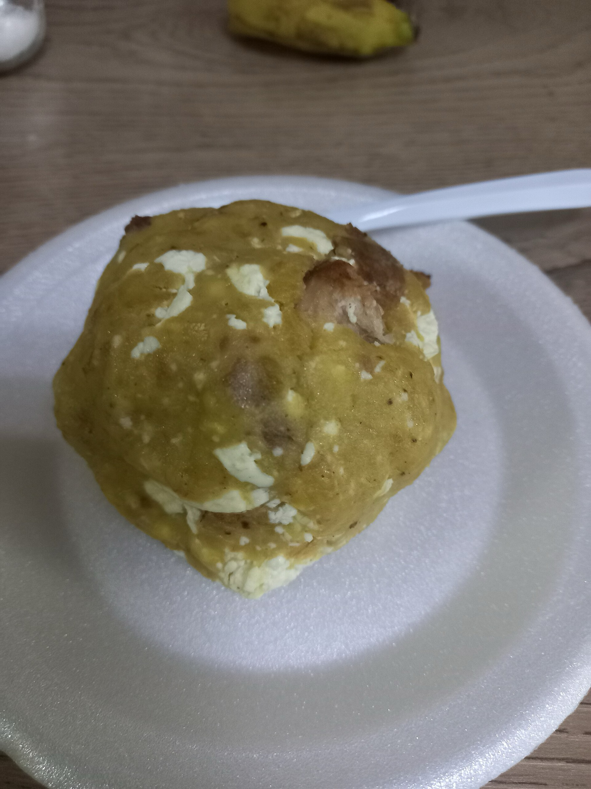
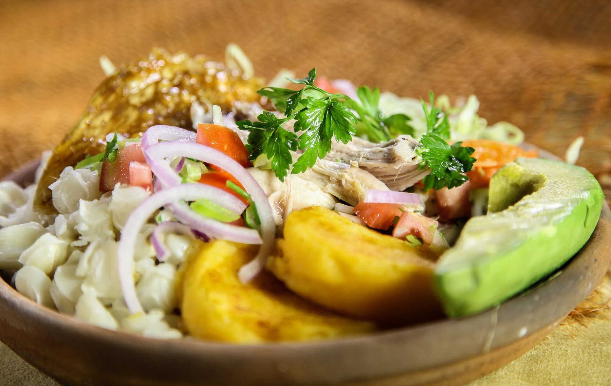
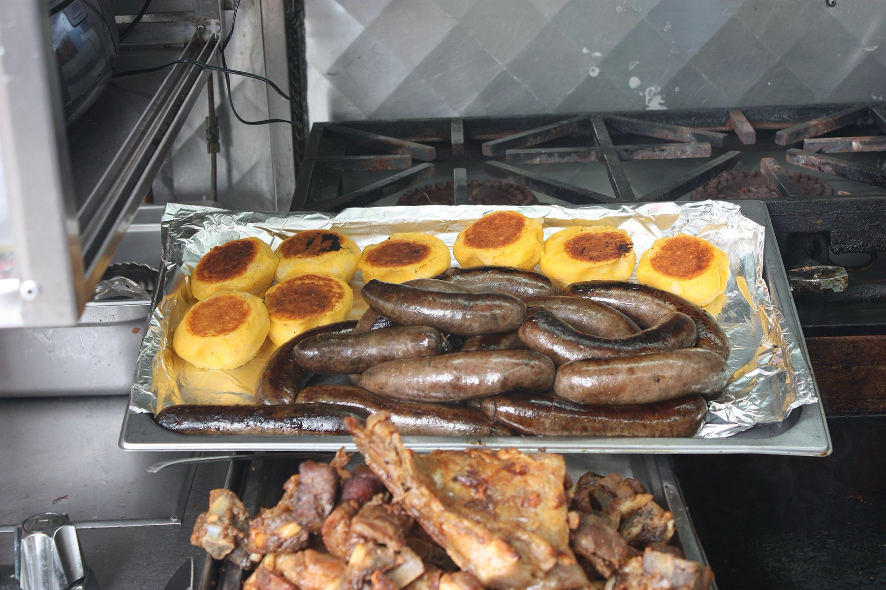
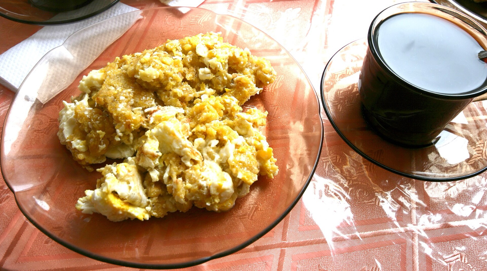
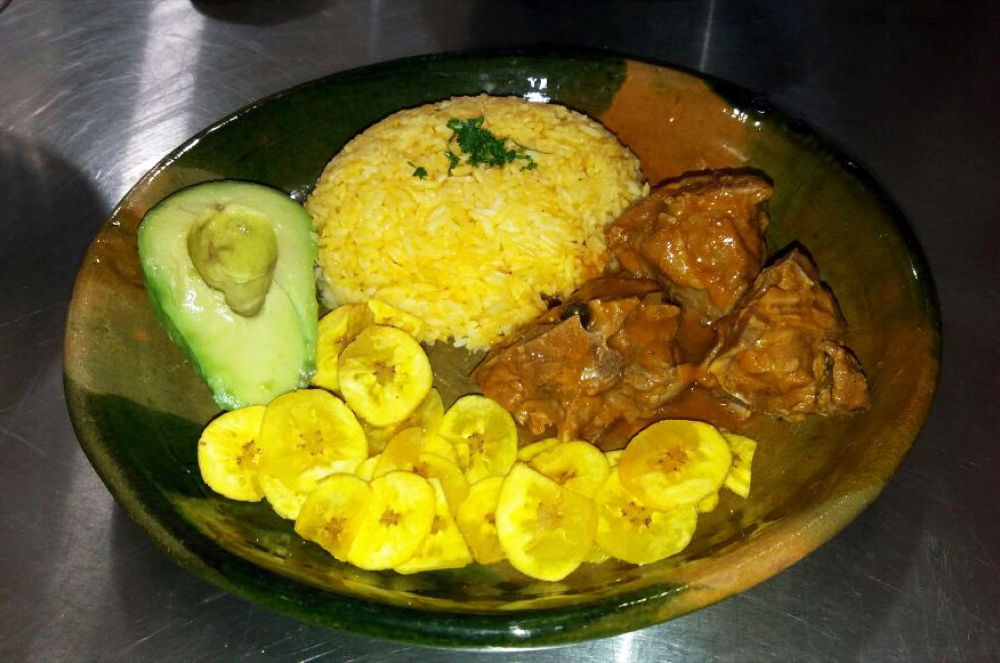
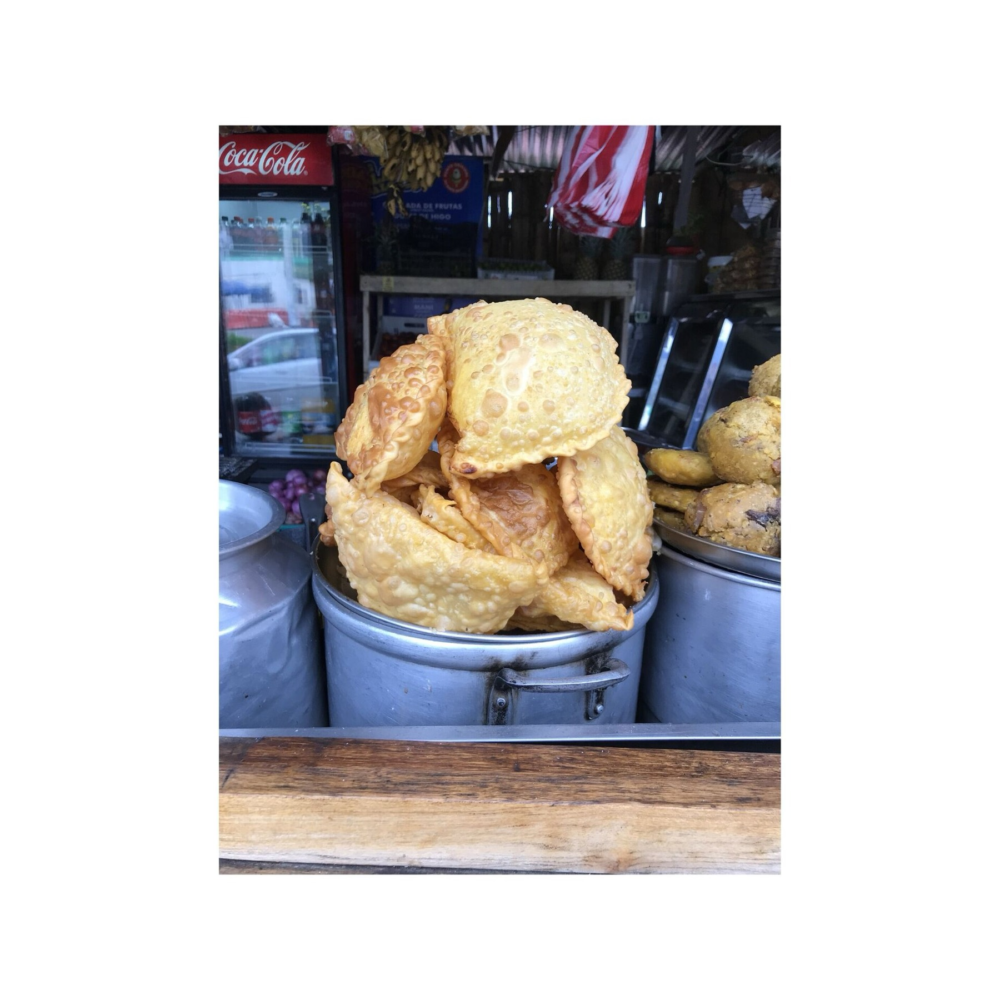
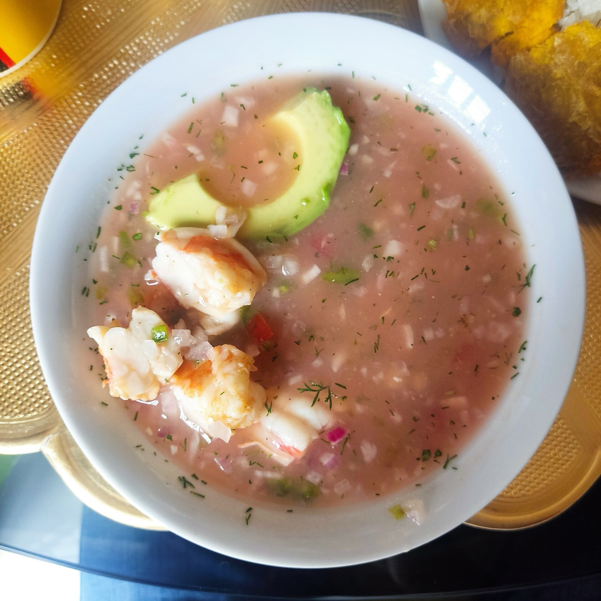

Directo de la Costa
Ceviche de
Camarón
El mar de Ecuador servido frío, con limón bravo, cebolla curtida y chifles crocantes.

Directo de la Costa
El mar de Ecuador servido frío, con limón bravo, cebolla curtida y chifles crocantes.

El plato bandera
Albacora, yuca suave y cebolla curtida en un caldo que resucita a cualquiera.

Desayuno de campeones
Verde majado con queso y chicharrón, como lo hacía la abuela. Con cafecito pasado.

Orgullo de la Sierra
Dorado y jugoso, con mote, llapingacho y agrio. La tradición andina completa.

Clásico andino
Tortillas de papa doradas, rellenas de queso, con chorizo, huevo frito y salsa de maní.
Los que nunca fallan
$12.99Albacora, yuca y cebolla curtida. Con chifles o pan.
Camarón fresco al limón con salsa rosada criolla.
Queso y chicharrón en verde majado a mano.

$10.99Verde majado con huevo y queso. Sabor de Zaruma.
 $12.99
$12.99Cremosa, con maní y papa. La reina del almuerzo.

$14.99Guiso profundo con arroz amarillo y maduro frito.
Chancho dorado con mote, tortilla y agrio serrano.

$4.50Infladas, crujientes y con azúcar por encima.
Tortillas de papa con queso, chorizo y salsa de maní.
Desliza para ver más → precios referenciales

Nuestra historia
En EC Food cocinamos el Ecuador entero: el encebollado que cura lunes, el ceviche que sabe a malecón, el hornado que huele a feria de pueblo. Cada plato se hace al momento, con la sazón de casa y el cariño de siempre.
Aquí no hay atajos: verde majado a mano, caldos de horas y ají hecho en piedra. Porque la comida ecuatoriana no se explica — se prueba.
Para toda hora
Te esperamos